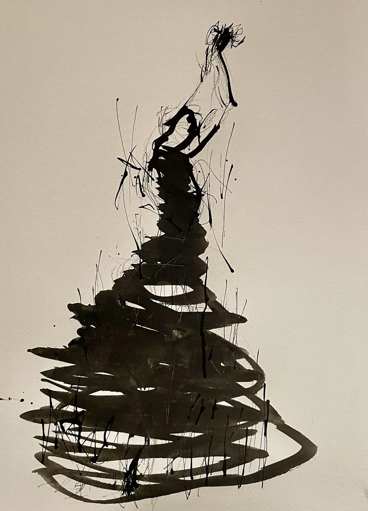
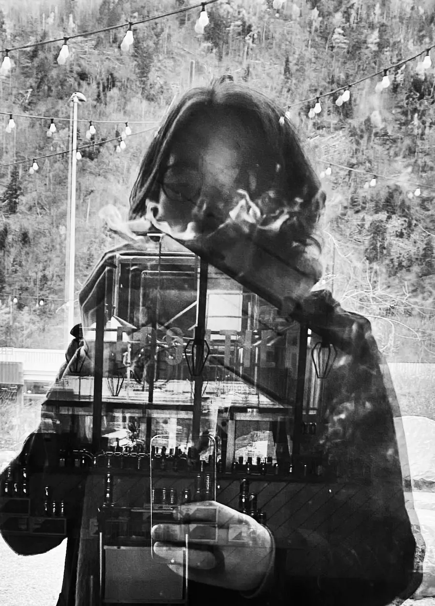

01

Camilo Rivera / Fragments
Des pages arrachées au temps. Des toiles, des visages, des lieux. Entrer par un détail. Repartir par un autre.
Choisir une pageÀ lire dans l’ordre.
Ou dans le désordre.



Des photographies personnelles, des toiles qui se transforment, de l’encre qui déborde.
Entrer hors cadre